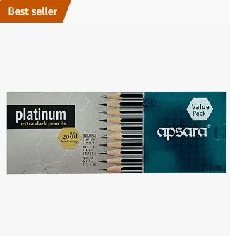

₹999/-
Brand: Apsara
Colour: multicolor
Ink Colour: Black
Age Range: (Description)kids, adult
Material: Wood

About this item:
TEACHER RECOMMENDED: Endorsed as the No.1 Recommended Pencil by Teachers, Signifying Its Quality and Suitability for Academic Use.
EXTRA DARK LEAD: The Pencils Feature an Extra Dark Lead, Which Aids Students in Achieving Better Handwriting, Potentially Earning Extra Marks. The Darkness Reduces the Pressure Required While Writing.
SOFT WOOD: Crafted With Soft Wood, These Pencils Ensure Easy Sharpening, Minimizing the Effort Needed to Maintain a Precise Writing Tip.
QUALITY RESEARCH: Based on Imrb Research From 2017, This Pencil Brand Has Undergone Credible Research, Adding to Its Credibility and Trustworthiness.
ACADEMIC ADVANTAGE: Designed With Students in Mind, These Pencils Aim to Enhance the Writing Experience, Potentially Leading to Improved Academic Performance.
CONSISTENCY IN DARKNESS: The Extra Dark Lead Consistency Across the Pack Ensures Uniformity, Providing a Reliable Writing Experience Throughout Usage.